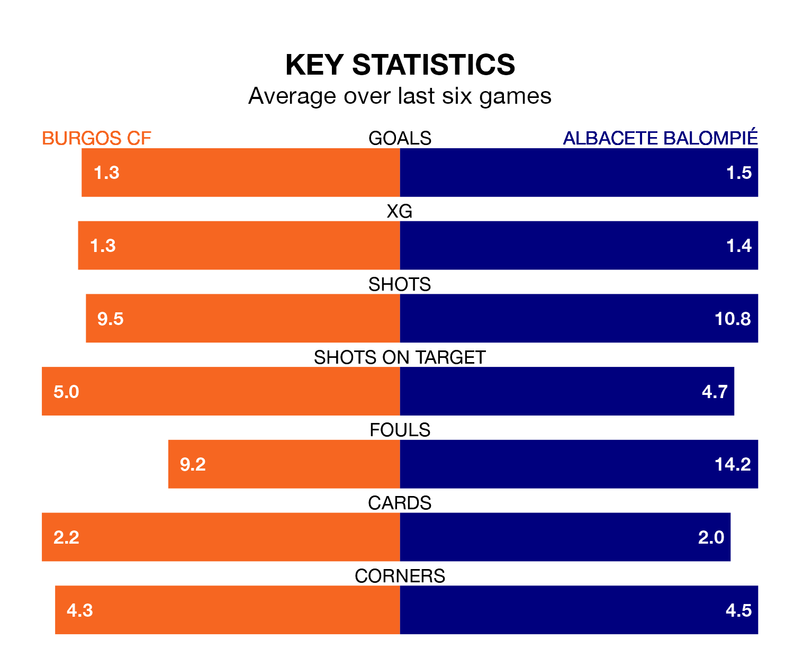

Albacete Balompié come to Estadio Municipal de El Plantío to play Burgos CF on late Sunday in poor form, having collected just four points from their last six games.
The visitors have won one and drawn one of their last six fixtures, while Burgos have three wins and two draws.
With 30 goals in 23 games so far this season, Burgos are scoring more than average in the league with 1.3 goals per game. But they are conceding more than average too, letting in 29 goals at a rate of 1.3 per game.
Albacete, meanwhile, are average scorers, with 1.2 goals per game. They have conceded 1.5 goals per game.
With José Antonio Caro Díaz between the sticks, the hosts can rely on one of the league's safest pair of hands. He has kept nine clean sheets in his 23 appearances this season, and only one other 'keeper – Sporting Gijón's Orlando Rubén Yáñez Alabart – has been able to prevent the opposition scoring on more occasions in the Segunda División.
In the away side's net, Bernabé Barragán Maestre has four clean sheets in 19 games. He has conceded a goal every 66 minutes, 20% more often than the 77 minutes between goals for Caro Díaz.
Albacete are 16th in the table after 23 games, of which they have won six and drawn seven, earning 25 points.
Burgos are five places ahead of Albacete in 11th, with nine wins and six draws putting them on 33 points.
In the last three years, Burgos and Albacete have played each other on three occasions. Albacete won one of them and they drew the other.
Their last meeting was on September 16, when Albacete won 2-1 at home.
Burgos's last match was on Monday, a 2-0 loss against Leganés.
Albacete lost 1-0 against AD Alcorcón last time out, on January 20.
Updated: 09:07 (UTC), 24/01/24